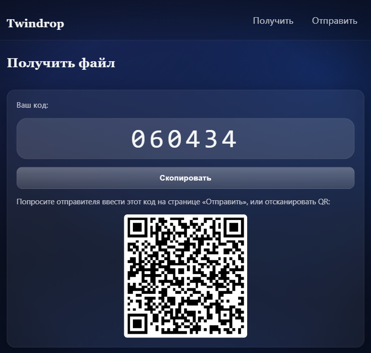

Обо мне
Меня зовут Джохонгир. Я студент UMFT, обучаюсь по направлению программная инженерия (2 курс из 4). Для меня
программирование — это не просто написание кода, а создание систем, которые работают быстро, выглядят
современно и приносят реальную пользу.
Я увлекаюсь современными подходами к веб-разработке, дизайном интерфейсов и архитектурой приложений. Стремлюсь
развиваться так, чтобы объединять в себе инженера и дизайнера. В будущем хочу создавать продукты, которые
будут облегчать жизнь людей и делать технологии доступнее.
- UI/UX
- Performance
- Web Animations
- Design Systems
- Accessibility
- Clean Code
- Problem Solving
- Full-Stack
- Open Source
- AI & Automation
Помимо программирования
В свободное время я стараюсь развиваться и в других сферах. Мне интересны книги — как художественные, так и политические. В изучении кодинга мне помогает мой друг Игорь, а ещё я люблю читать статьи и следить за политическими событиями. Иногда могу зависнуть на YouTube, особенно на политических подкастах. Также увлекаюсь изучением религий, чтобы расширять своё мировоззрение и лучше понимать культуру и историю разных народов.
Музыка и песни
Музыку слушаю самых разных жанров: инди, поп, инди-поп, рок, альт-рок, хип-хоп, рэп и даже классику.
Больше всего нравятся группы Radiohead, Cigarettes After Sex, Muse, Linkin Park, Keane, Scorpions,
Reamonn, The Neighbourhood, Tame Impala, Deftones, A-ha, Coldplay, Shamrain, The Rasmus, The Smiths, Arctic
Monkeys, Sting, Limp Bizkit, Duran Duran.
Среди любимых исполнителей — Lana Del Rey, Billie Eilish, Tom Odell, d4vd, Frank Ocean, Gary
Moore и многие другие.
В мире классической музыки особенно ценю творчество Шопена, Бетховена, Листа, Моцарта, Рахманинова,
Баха и Вивальди.
Шахматы
Отдельное место в моих интересах занимают шахматы. Я люблю изучать дебюты гроссмейстеров и сам играю онлайн на
платформах Chess.com и Lichess, а также в программах
Tarrasch и Lucas Chess.
С интересом слежу за партиями Магнуса Карлсена, Леви Розмана, Хикару Накамуры, Гарри Каспарова,
Нодирбека Абдусатторова, Яна Непомнящего, Дины Беленковой, Анны Крамлинг и сестёр
Ботез.
Навыки
CSS
JavaScript
Python
C++
Java
SQL
PostgreSQL
Проекты

Twindrop
Лёгкий и элегантный сервис P2P-обмена файлами прямо в браузере — без регистрации, без облаков, только защищённый WebRTC-канал.